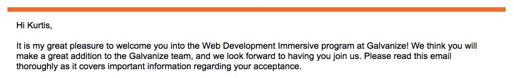

I enrolled in the Web Development Immersive primarily for the skillset with plans to eventually work for myself offering products and services for the food and beverage industry. But first I need to be practical and get a junior developer position so I can gain valuable experience working as part of a team. In addition to what's taught at the program other technologies of interest include NoSQL databases such as MongoDB , Neo4j , OrientDB and ArangoDB .
And data patterns! Need to learn those data patterns...